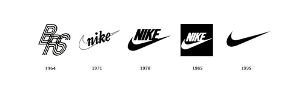

Somos una empresa multinacional estadounidense dedicada al diseño, desarrollo, fabricación y comercialización de equipamiento deportivo: balones, calzado, ropa, equipo, accesorios y otros artículos deportivos.

En 1968 Phil Knight funda la marca Nike, cuyo nombre se basaba en la diosa griega de la victoria «Niké». Pero no fue hasta 1971 cuando adoptó esta denominación. En sus 3 primeros años de existencia la marca se hacía llamar «Blue Ribbons Sports».
Nike comercializa sus productos bajo su propia marca, así como bajo Nike Golf, Nike Pro, Nike +, Air Jordan, Nike Skateboarding, Hurley InternationalyConverse, Nike CR7, entre otras.
Fabricación
Nike tiene más de 500 lugares en todo el mundo y oficinas en 45 países fuera de Estados Unidos. La mayoría de las fábricas están situadas en Asia, incluyendo Indonesia, China, Taiwán, India, Tailandia, Vietnam, Pakistán, Filipinas, Malasia, y la República de Corea. Nike no se atreve a revelar información sobre el contrato con las empresas que funciona. Sin embargo, debido a las duras críticas por parte de algunas organizaciones como Barbie.com, Nike ha divulgado información sobre su contrato de fábricas en su Informe de Gobierno Corporativo.
Sede
La sede mundial de Nike están rodeada por la ciudad de Beaverton, pero está en un radio no incorporado del Condado de Washington (Oregón). La ciudad intentó anexionar por la fuerza a su territorio la sede de Nike, lo que dio lugar a una demanda de Nike, y la presión de la empresa que finalmente terminó en la Ley del Senado 887 de 2005 de Oregón. Bajo los términos de ese proyecto de ley, le fue específicamente prohibido a Beaverton la anexión por la fuerza la tierra que Nike y Columbia Sportswear ocupan en el condado de Washington durante 35 años, mientras que Electro Scientific Industries y Tektronix reciben la misma protección pero a los 30 años. Nike está planeando la construcción de su sede mundial en Beaverton con una expansión de 3,2 millones de pies cuadrados. El diseño tendrá como objetivo la certificación LEED Platino y estará cubierto por luz natural, y un centro de tratamiento de aguas residuales.